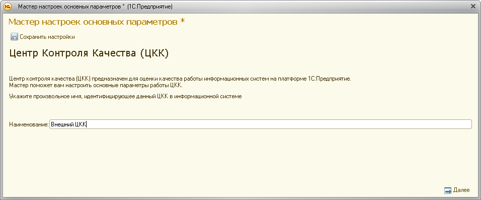
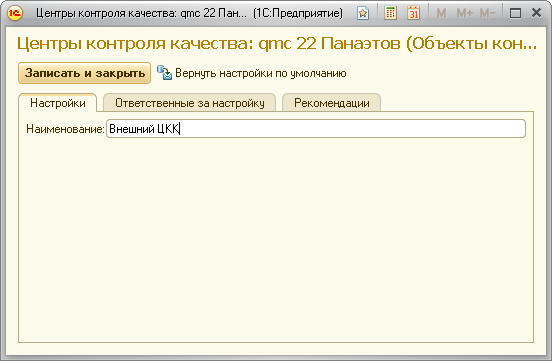
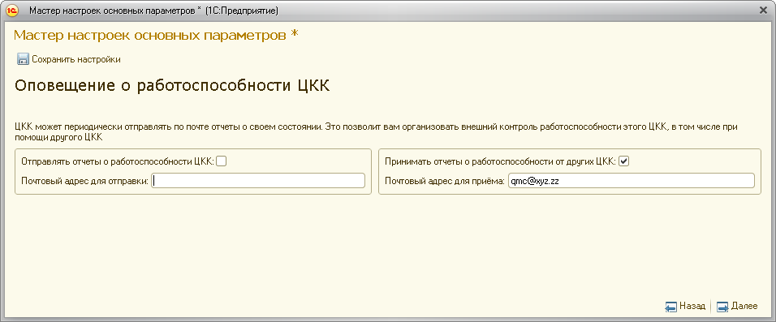
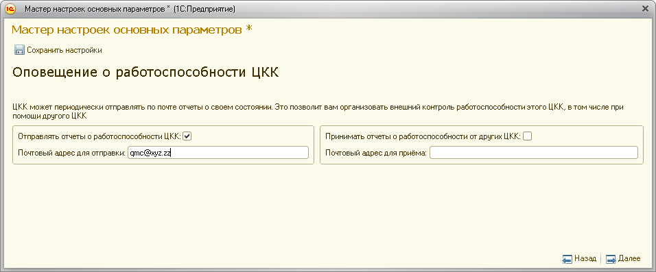
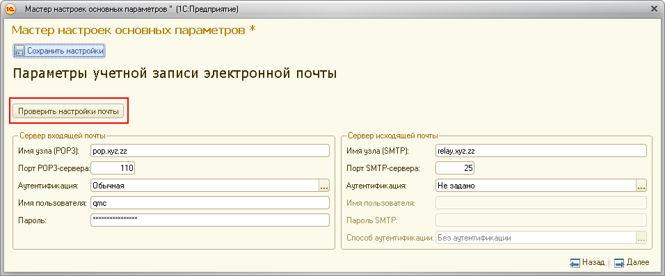

Данное сообщение означает, что данный ЦКК не сумел обнаружить отчёты с результатами работы контролируемого ЦКК. Возможны следующий причины:


У контролирующего ЦКК необходимо разрешить принимать отчёты от других ЦКК и правильно указать электронный почтовый адрес, по которому будет осуществляться поиск поступивших отчётов.

ВНИМАНИЕ! Настройки учётной записи почты должны соответствовать почтовому адресу, определённому в поле "Почтовый адрес для приёма".
У контролируемого ЦКК следует установить в значение Истина свойство "Отправлять отчёты о работоспособности ЦКК" и верно указать электронный почтовый адрес того ЦКК, который осуществляет разбор отчётов.

Следует проверить настройки почты в контролирующем и контролируемом ЦКК. Для проверки работоспособности настроек рекомендуется воспользоваться кнопкой "Проверить настройки почты"
